ខេត្តនៅក្នុងប្រទេសកម្ពុជា
សូមស្វាគមន៏មកកាន់ខេត្តកណ្តាល
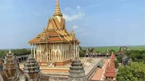
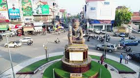
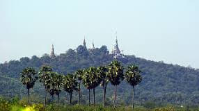
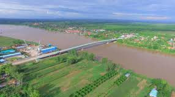
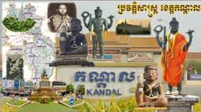
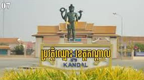
១. យុគសម័យបុរាណ និងមជ្ឈិមសម័យ
សម័យហ្វូណន និងចេនឡា (សតវត្សរ៍ទី ១ ដល់សតវត្សរ៍ទី ៩): តំបន់ខេត្តកណ្តាលបច្ចុប្បន្នត្រូវបានគេជឿថាជាតំបន់តាំងទីលំនៅដ៏សំខាន់មួយតាំងពីសម័យបុរេប្រវត្តិមក។ ទីតាំងរបស់ខ្លួននៅតាមបណ្ដោយដងទន្លេមេគង្គ ទន្លេសាប និងទន្លេបាសាក់ ធ្វើឱ្យតំបន់នេះក្លាយជា មជ្ឈមណ្ឌលពាណិជ្ជកម្ម និងការតភ្ជាប់ដ៏សំខាន់។
សម័យអង្គរ (សតវត្សរ៍ទី ៩ ដល់ទី ១៥): ខេត្តកណ្ដាលជាផ្នែកមួយនៃអាណាចក្រខ្មែរដ៏ធំល្វឹងល្វើយ។ សំណង់ប្រាសាទបុរាណមួយចំនួន (ដូចជាប្រាសាទស្រីគ្រប់ល័ក្ស នៅភ្នំប្រសិទ្ធិ ឬប្រាសាទតាព្រហ្មនៅទន្លេបាទី) នៅតែជាតឹកតាងបញ្ជាក់ពីឥទ្ធិពលវប្បធម៌ និងសាសនាដ៏ខ្លាំងក្លារបស់អាណាចក្រនេះ។
២. អតីតរាជធានីឧត្ដុង្គ
រាជធានីរបស់កម្ពុជា (ឆ្នាំ ១៦១៨ ដល់ ១៨៦៦): កន្លែងដែលមានភាពល្បីល្បាញបំផុតក្នុងខេត្តកណ្តាលគឺ ភ្នំឧត្ដុង្គ (ស្ថិតនៅស្រុកពញាឮបច្ចុប្បន្ន) ដែលធ្លាប់ជា រាជធានីរបស់ប្រទេសកម្ពុជា អស់រយៈពេលប្រមាណ ២៥០ ឆ្នាំ។
សម័យអង្គឌួង: ក្នុងរាជ្យព្រះបាទអង្គឌួង ការអភិវឌ្ឍសំខាន់ៗជាច្រើនបានកើតឡើងនៅតំបន់នេះ រួមមានការកសាងប្រឡាយ ស្ពាន និងវត្តអារាមជាច្រើន។
ការផ្លាស់ប្តូររាជធានី: នៅឆ្នាំ ១៨៦៦ ព្រះបាទនរោត្ដមបានសម្រេចចិត្តបោះបង់ចោលរាជធានីឧត្ដុង្គ ហើយបានផ្លាស់រាជវាំងមកតាំងនៅភ្នំពេញបច្ចុប្បន្ន (ដែលមានចម្ងាយប្រហែល ១ ដប់គីឡូម៉ែត្រពីតំបន់ឧត្ដុង្គ)។
៣. ការបង្កើតខេត្តជាផ្លូវការ
រដ្ឋបាលសម័យអាណានិគម: ការបែងចែករដ្ឋបាលច្បាស់លាស់នៃ "ខេត្តកណ្ដាល" បានចាប់ផ្ដើមតាំងពីអំឡុងឆ្នាំ ១៩០៧។
ការរៀបចំព្រំប្រទល់ (១៩២៧-១៩៤១): ក្នុងរជ្ជកាលព្រះបាទស៊ីសុវត្ថិ-មុនីវង្ស ខេត្តកណ្តាលត្រូវបានរៀបចំជាស្រុក និងតំបន់មួយចំនួនដើម្បីគ្រប់គ្រងដែនដី។
៤. តួនាទីបច្ចុប្បន្ន
ខ្សែក្រវាត់សេដ្ឋកិច្ច: បច្ចុប្បន្ន ខេត្តកណ្ដាលត្រូវបានគេចាត់ទុកជា ខ្សែក្រវាត់សេដ្ឋកិច្ច និងជាតំបន់ពង្រីករបស់រាជធានីភ្នំពេញ។
ទីប្រជុំជនតាខ្មៅ: ទីរួមខេត្តបច្ចុប្បន្នគឺ ក្រុងតាខ្មៅ ដែលមានចម្ងាយជិតបំផុតទៅនឹងរាជធានីភ្នំពេញ (ប្រមាណ ៨-១០ គីឡូម៉ែត្រ)។
សក្ដានុពល: ខេត្តនេះជាខេត្តដែលមានប្រជាជនរស់នៅច្រើនជាងគេលំដាប់ទីពីរនៅកម្ពុជា (បន្ទាប់ពីភ្នំពេញ) និងជាមជ្ឈមណ្ឌលសំខាន់លើវិស័យ កសិកម្ម (ជាពិសេសដាំដុះបន្លែ ផ្លែឈើ និងស្រូវ) ឧស្សាហកម្ម (រោងចក្រកាត់ដេរជាច្រើន) និង សិប្បកម្ម (ដូចជាតំបន់ត្បាញសូត្រនៅកោះដាច់)។
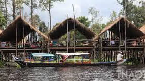
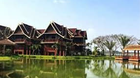
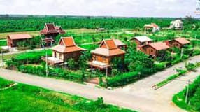
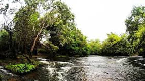
ខេត្តកណ្តាលមានតំបន់ទេសចរណ៍សម្បូរបែប ដែលរួមមានទាំងទីតាំងប្រវត្តិសាស្ត្រ សាសនា វប្បធម៌ និងរមណីយដ្ឋានកែច្នៃបែបធម្មជាតិ ដែលនៅជិតរាជធានីភ្នំពេញបង្កើយ។
ខាងក្រោមនេះជាកន្លែងសំខាន់ៗដែលអ្នកគួរទៅទស្សនា៖
១. តំបន់ទេសចរណ៍ប្រវត្តិសាស្ត្រ និងវប្បធម៌
ភ្នំឧត្ដុង្គ (Phnom Udong): គឺជាអតីតរាជធានីរបស់កម្ពុជាពីឆ្នាំ ១៦១៨ ដល់ ១៨៦៦។ នៅលើភ្នំនេះ មានព្រះចេតិយបុរាណជាច្រើនសម្រាប់តម្កល់អដ្ឋិធាតុព្រះមហាក្សត្រខ្មែរ ហើយក៏មានរូបសំណាកព្រះពុទ្ធបដិមាករដ៏ធំមួយផងដែរ។ អ្នកអាចឡើងភ្នំដើម្បីគយគន់ទេសភាពដ៏ស្រស់ស្អាតនៃវាលស្រែ និងតំបន់ជុំវិញ។
ទួលបឹងស្នេហ៍ទន្លេបាទី (Tonle Bati): ជាបឹងធម្មជាតិដ៏ស្រស់ស្អាតមួយ ស្ថិតនៅក្បែរក្រុងតាខ្មៅ។ នៅតំបន់នេះ មានប្រាសាទបុរាណពីរគឺ ប្រាសាទតាព្រហ្ម និង ប្រាសាទយាយពៅ ដែលត្រូវបានកសាងឡើងក្នុងសតវត្សរ៍ទី ១២ ក្នុងរជ្ជកាលព្រះបាទជ័យវរ្ម័នទី ៧។
ភ្នំប្រសិទ្ធិ (Phnom Prasith): មានវត្តអារាម និងសំណង់បុរាណមួយចំនួន រួមទាំងចេតិយបុរាណនៅលើកំពូលភ្នំ ដែលជាទីតាំងសក្ការបូជាដ៏សំខាន់។
វត្តអង្គរជ័យ (Ang Kor Chey Pagoda): វត្តនេះល្បីល្បាញដោយសារមានរូបសំណាកព្រះពុទ្ធបដិមាដ៏ធំ និងមានទីតាំងជាប់នឹងទួលខ្មៅ ដែលគេជឿថាជាទីតាំងបុរាណមានបារមី។
២. តំបន់ធម្មជាតិ និងសិប្បកម្ម
កោះដាច់ (Koh Dach ឬ Silk Island): គឺជាកោះមួយដែលស្ថិតនៅកណ្តាលទន្លេមេគង្គ អាចធ្វើដំណើរដោយជិះសាឡាងពីភ្នំពេញ។ កោះនេះល្បីខាង សិប្បកម្មតម្បាញសូត្រ។ អ្នកអាចទៅទស្សនាផ្ទះអ្នកភូមិដែលត្បាញសូត្រដោយដៃ ដើរលេងកម្សាន្តតាមជនបទស្ងប់ស្ងាត់ និងទិញផលិតផលសូត្រដែលមានគុណភាព។
ភ្នំសាន់ (Sa Ang Mountain): ជាកន្លែងទេសចរណ៍បែបធម្មជាតិនិងសាសនា។ ក្នុងរដូវវស្សា ភ្នំនេះមើលទៅដូចជាកោះតូចមួយដែលព័ទ្ធជុំវិញដោយទឹក។ នៅទីនោះ ក៏មានវត្តមួយនៅលើកំពូលភ្នំដែលអាចឱ្យអ្នកទស្សនាទេសភាពជុំវិញបាន។
៣. រមណីយដ្ឋានកែច្នៃ (កន្លែងកម្សាន្តទំនើប)
សួនកម្សាន្តស្កាយលែន 7NG (Skyland 7NG): ជាសួនកម្សាន្តដ៏ធំមួយនៅជាយក្រុងភ្នំពេញ (ស្រុកកៀនស្វាយ)។ ទីនេះមានកន្លែងលេងច្រើនប្រភេទដូចជា៖
សួនដាយណូស័រ
អាងហែលទឹក
កន្លែងជិះទូក
កញ្ចុះអង្គុយលំហែនៅលើទឹក
Jet's Garden Park: ជារមណីយដ្ឋានកែច្នៃមួយទៀតដែលមានធម្មជាតិស្រស់ស្អាត មានកូនភ្នំតូចៗ កន្លែងលេងទឹក និងរូបសំណាកជាច្រើនសម្រាប់ថតរូប។
វត្តគៀនស្វាយក្រៅ (Kean Svay Krau Pagoda): ជាកន្លែងដែលមានលក្ខណៈស្រដៀងនឹងតំបន់កម្សាន្តគយគន់ទេសភាព និងអង្គុយញ៉ាំអាហារតាមមាត់ទន្លេក្នុងស្រុកគៀនស្វាយ។
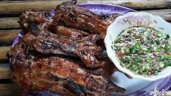
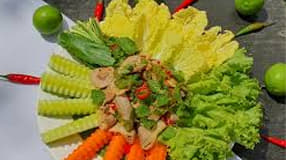


ខេត្តកណ្ដាល ស្ថិតនៅក្បែររាជធានីភ្នំពេញ និងសម្បូរទៅដោយតំបន់កសិកម្ម ការនេសាទ និងផលិតផលក្នុងស្រុក។ ដូច្នេះ ម្ហូបអាហារនៅខេត្តនេះមានភាពសាមញ្ញ តែមានរសជាតិឆ្ងាញ់ ដោយប្រើប្រាស់វត្ថុធាតុដើមស្រស់ៗដែលដាំដុះ ឬចាប់បានពីកន្លែងផ្ទាល់។
ខេត្តកណ្ដាលមិនមានមុខម្ហូបប្រចាំតំបន់ល្បីល្បាញច្បាស់លាស់ដូចបណ្ដាខេត្តដទៃឡើយ ប៉ុន្តែមុខម្ហូប និងអាហារសម្រន់មួយចំនួនដែលពេញនិយមនៅទីនោះរួមមាន៖
១. អាហារដែលពេញនិយមតាមទីផ្សារ និងជនបទ
ខេត្តកណ្ដាលជាតំបន់កសិកម្មលំដាប់ទីមួយ ដូច្នេះផលិតផលស្រស់ៗគឺជាចំណុចពិសេស៖
នំបញ្ចុក (Nom Banh Chok): ដូចបណ្ដាខេត្តផ្សេងៗដែរ នំបញ្ចុកជាអាហារដ៏សំខាន់មួយដែលមានលក់គ្រប់ទីផ្សារនៅខេត្តកណ្ដាល។ អ្នកស្រុកនៅតំបន់អារីក្សត្រក៏មានការផលិតនំបញ្ចុកផងដែរ។
ម្ហូបធ្វើពីត្រីស្រស់: ដោយសារនៅក្បែរទន្លេមេគង្គ និងទន្លេសាប ខេត្តកណ្ដាលសម្បូរទៅដោយត្រីស្រស់ៗ។ មុខម្ហូបដូចជា ត្រីអាំង សម្លម្ជូរត្រី និងម្ហូបផ្សេងៗទៀតដែលធ្វើពីត្រីគឺជាអាហារប្រចាំថ្ងៃដ៏សំខាន់។
សាច់កណ្ដុរស្រែ: សាច់កណ្ដុរស្រែដែលចាប់បានពីវាលស្រែនៅកណ្ដាលជាមុខម្ហូបដែលអ្នកស្រុកពេញនិយមខ្លាំង។ គេនិយមយកទៅ អាំង ឆាគ្រឿង ឬ ឆាខ្ញី ហើយរសជាតិត្រូវបានគេអះអាងថាឆ្ងាញ់ជាពិសេសនៅពេលប្រឡាក់ហើយអាំង។
អាហារតាមភោជនីយដ្ឋានមាត់ទឹក: នៅតាមតំបន់ទេសចរណ៍មាត់ទឹកដូចជា តំបន់ទន្លេបាទី មានលក់ម្ហូបអាហារប្រពៃណីខ្មែរជាច្រើនមុខ ដូចជា មាន់អាំង និង ត្រីអាំង ញ៉ាំក្បែរទឹក។
២. អាហារសម្រន់នៅជនបទ (Rural Snacks)
ផ្លែឈើស្រស់ៗ: ដោយសារដីមានជីជាតិ ខេត្តកណ្ដាលសម្បូរដំណាំផ្លែឈើល្អៗដូចជា មៀន ដូង មង្ឃុត និង ចេក។
អាហារធ្វើពីអង្ករ: ដូចជា បាយដំណើប និងនំផ្សេងៗទៀតដែលមានលក់នៅតាមទីផ្សារជនបទ។
ដោយសារខេត្តកណ្ដាលជាខេត្តព័ទ្ធជុំវិញរាជធានីភ្នំពេញ ម្ហូបអាហារនៅតំបន់នេះក៏មានភាពស្រដៀងគ្នានឹងម្ហូបរាជធានីដែរ ដូចជា គុយទាវ បាយសាច់ជ្រូក ការីខ្មែរ និង អាម៉ុក ដែលមានលក់នៅគ្រប់ភោជនីយដ្ឋាន។
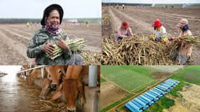
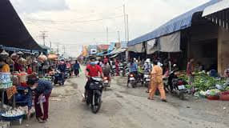
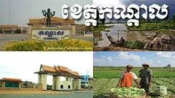
១. ព័ត៌មានទូទៅអំពីប្រជាជន
ចំនួនប្រជាជន: ខេត្តកណ្តាលជាខេត្តមួយក្នុងចំណោមខេត្តដែលមានប្រជាជនច្រើនជាងគេលំដាប់ទីពីរបន្ទាប់ពីរាជធានីភ្នំពេញ។ គិតត្រឹមឆ្នាំ ២០២៤ ចំនួនប្រជាជនសរុបមានប្រមាណ ១,៣៥២,១៩៨ នាក់។
ទីប្រជុំជន: ទីរួមខេត្តគឺ ក្រុងតាខ្មៅ ដែលស្ថិតនៅចម្ងាយប្រហែល ៨ គីឡូម៉ែត្រភាគខាងត្បូងនៃភ្នំពេញ។ ការរីកចម្រើនរបស់តាខ្មៅធ្វើឱ្យព្រំប្រទល់រវាងខេត្តកណ្តាលនិងរាជធានីកាន់តែពិបាកនឹងសម្គាល់។
សាសនា: ប្រជាជនភាគច្រើន (លើសពី ៩៨%) កាន់ ព្រះពុទ្ធសាសនា និកាយថេរវាទ។ ក៏មានជនជាតិភាគតិចដូចជា ជនជាតិចាម ដែលកាន់សាសនាឥស្លាមផងដែរ។
២. របៀបរស់នៅ និងសេដ្ឋកិច្ច
របៀបរស់នៅរបស់ប្រជាជននៅខេត្តកណ្តាលអាចបែងចែកជាពីរលក្ខណៈសំខាន់ៗ៖
ក. ជីវភាពបែបជនបទ (កសិកម្ម និងនេសាទ)
តំបន់ជនបទក្នុងខេត្តកណ្តាលនៅតែរក្សាបាននូវទម្រង់ជីវភាពបែបប្រពៃណីខ្មែរ ជាមួយនឹងផ្ទះខ្មែរលើកសសរខ្ពស់ និងទេសភាពវាលស្រែខៀវស្រងាត់។
កសិកម្ម: ស្រូវ (ស្រូវប្រាំង) ដូង ចេក ដំឡូងមី សណ្ដែកដី និង ម្រេច គឺជាដំណាំសំខាន់ៗ។ ប្រជាជនជាច្រើននៅតែបន្តរបរ ឡើងត្នោត ដែលជាសញ្ញាណមួយនៃតំបន់ជនបទកម្ពុជា។
នេសាទ: ដោយសារមានទន្លេធំៗពីរហូរកាត់គឺ ទន្លេមេគង្គ និង ទន្លេបាសាក់ ការនេសាទត្រីស្រស់ក៏ជារបរសំខាន់មួយដែរ ដើម្បីផ្គត់ផ្គង់ដល់រាជធានីភ្នំពេញ។
សិប្បកម្ម: ជនបទខ្លះល្បីល្បាញដោយសារសិប្បកម្មដូចជា ការតម្បាញសូត្រ (ជាពិសេសនៅលើ កោះពេជ្រចិន្តាហៅកោះអន្លង់ចិន ឬកោះឧកញ៉ាតី) ចម្លាក់ឈើ និង គ្រឿងសិប្បកម្ម ផ្សេងៗទៀត។
ខ. ជីវភាពបែបទីក្រុង (ឧស្សាហកម្ម និងពាណិជ្ជកម្ម)
ខេត្តកណ្តាលដើរតួជា ខ្សែក្រវាត់សេដ្ឋកិច្ច ជុំវិញរាជធានីភ្នំពេញ។
រោងចក្រ: ខេត្តនេះជាទីតាំងនៃរោងចក្រកាត់ដេរសម្លៀកបំពាក់ជាច្រើន ដែលបានបង្កើតការងារដល់កម្មកររាប់សែននាក់ និងរួមចំណែកយ៉ាងសំខាន់ដល់ការនាំចេញរបស់កម្ពុជា។
ពាណិជ្ជកម្ម: ការធ្វើពាណិជ្ជកម្មទំនិញកសិកម្មទៅកាន់ទីផ្សារភ្នំពេញ និងការរីកដុះដាលនៃទីផ្សារក្នុងស្រុក (ដូចជា ផ្សារតាខ្មៅ) ធ្វើឱ្យតំបន់ទីប្រជុំជនមានភាពអ៊ូអរខ្លាំង។
៣. លក្ខណៈវប្បធម៌សំខាន់ៗ
ប្រវត្តិសាស្ត្រដ៏យូរលង់: ខេត្តកណ្តាលមានកេរដំណែលប្រវត្តិសាស្ត្រសំខាន់ៗ ដូចជា ភ្នំឧដុង្គ ដែលជារាជធានីចាស់របស់កម្ពុជាពីឆ្នាំ ១៦១៨ ដល់ ១៨៦៦។ តំបន់នេះសម្បូរទៅដោយចេតិយបុរាណ និងសំណង់ប្រវត្តិសាស្ត្រដែលទាក់ទងនឹងជំនឿសាសនា។
ភាពជិតស្និទ្ធនឹងភ្នំពេញ: ឥទ្ធិពលវប្បធម៌និងទម្លាប់រស់នៅរបស់ប្រជាជនកណ្តាលមានភាពស្រដៀងគ្នាខ្លាំងនឹងប្រជាជនភ្នំពេញ ទាំងការស្លៀកពាក់ ម្ហូបអាហារ និងការប្រើប្រាស់ភាសា។
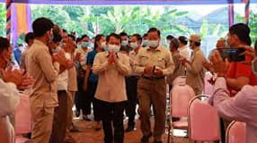
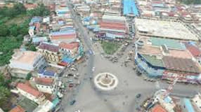
ទិដ្ឋភាពទូទៅនៃសេដ្ឋកិច្ចខេត្តកណ្ដាល
សេដ្ឋកិច្ចរបស់ខេត្តកណ្ដាលមានភាពចម្រុះ ហើយពឹងផ្អែកជាសំខាន់ទៅលើវិស័យធំៗចំនួនបីគឺ ឧស្សាហកម្ម កសិកម្ម និង វិស័យអចលនទ្រព្យ/ហេដ្ឋារចនាសម្ព័ន្ធ ដែលបម្រើជាមូលដ្ឋានទ្រទ្រង់សេដ្ឋកិច្ចជាតិ។
១. ឧស្សាហកម្ម និងរោងចក្រ
មជ្ឈមណ្ឌលកាត់ដេរ: ខេត្តកណ្ដាលគឺជាទីតាំងនៃ រោងចក្រកាត់ដេរ ផលិតស្បែកជើង ផលិតផលធ្វើដំណើរ និងកាបូបជាច្រើន។ រោងចក្រទាំងនេះបានផ្ដល់ការងារដល់កម្មករនិយោជិតរាប់សែននាក់ (ជាង ៥០០,០០០ នាក់) និងបង្កើតប្រាក់ចំណូលដ៏ច្រើនដល់ខេត្ត។
តំបន់សេដ្ឋកិច្ចពិសេស (SEZ): មានតំបន់សេដ្ឋកិច្ចពិសេស និងផែស្ងួត ដែលជាកត្តាអំណោយផលដល់វិស័យពាណិជ្ជកម្ម និងការវិនិយោគ។
ឧស្សាហកម្មផ្សេងៗ: រួមមានការផលិតសម្ភារសំណង់ ការកែច្នៃថ្ម ថ្នាំលាប រោងចក្រអេឡិចត្រូនិច និងការផលិតក្បឿងជាដើម។
២. កសិកម្ម និងនេសាទ
ឧស្សាហកម្មសំខាន់: ការធ្វើ កសិកម្ម និង ការនេសាទ គឺជាឧស្សាហកម្មមូលដ្ឋានពីររបស់ខេត្ត។ ខេត្តនេះមានដីទំនាបលិចទឹកអំណោយផលសម្រាប់ការដាំដុះ។
ផលិតផលសំខាន់ៗ: ផលិតផលកសិកម្មសំខាន់ៗរួមមាន ស្រូវ (ជាពិសេសស្រូវវស្សា) ដំឡូងមី ពោតក្រហម ប្រេងដូង សណ្ដែកដី និង ម្រេច។
ការអភិវឌ្ឍន៍: រដ្ឋបាលខេត្តបានយកចិត្តទុកដាក់អភិវឌ្ឍប្រព័ន្ធធារាសាស្រ្ត ដូចជាអាងស្តុកទឹក ប្រឡាយមេ និងប្រឡាយរង ដើម្បីគាំទ្រដល់ការដាំដុះស្រូវ និងដំណាំផ្សេងៗ។
៣. វិស័យទេសចរណ៍
សក្តានុពល: ខេត្តកណ្ដាលមានសក្ដានុពលក្នុងការអភិវឌ្ឍ វិស័យទេសចរណ៍ ទាំងទេសចរណ៍ធម្មជាតិកែច្នៃ និងវប្បធម៌ប្រវត្តិសាស្រ្ត។
តំបន់រមណីយដ្ឋាន: មានរមណីយដ្ឋានទេសចរណ៍កែច្នៃល្បីៗជាច្រើន ដូចជា រមណីដ្ឋានចំការស្នេហ៍ ស្កាយលែន (7NG) ព្រីនម៉ាន័រ និង រមណីយដ្ឋានភ្នំព្រះរាជទ្រព្យ ជាដើម។
ការទទួលស្គាល់: ទីក្រុងតាខ្មៅ ដែលជារាជធានីនៃខេត្ត ក៏ធ្លាប់ទទួលបានពានរង្វាន់ ទីក្រុងទេសចរណ៍ស្អាតអាស៊ាន (សុពលភាពឆ្នាំ២០២០-២០២២) ផងដែរ។
កត្តាជំរុញការអភិវឌ្ឍន៍
ខេត្តកណ្ដាលទទួលបានការរីកចម្រើនយ៉ាងលឿនដោយសារកត្តាភូមិសាស្រ្ត និងហេដ្ឋារចនាសម្ព័ន្ធសំខាន់ៗ៖
ទីតាំងយុទ្ធសាស្ត្រ: ខេត្តកណ្ដាល ហ៊ុមព័ទ្ធជុំវិញរាជធានីភ្នំពេញ ទាំងស្រុង ដែលធ្វើឱ្យខេត្តនេះក្លាយជាច្រកពាណិជ្ជកម្ម និងតំបន់ពង្រីកទីក្រុងដ៏សំខាន់។
បណ្ដាញផ្លូវជាតិ: ខេត្តនេះជាប់បណ្ដាញផ្លូវជាតិសំខាន់ៗជាច្រើន (ដូចជា ផ្លូវជាតិលេខ ១, ២, ៣, ៤, ៥, ៦, ៤៤ និង ៥១) និងមាន ផ្លូវក្រវ៉ាត់ក្រុងទី៣ ដែលជួយសម្រួលដល់ការដឹកជញ្ជូន និងពាណិជ្ជកម្មយ៉ាងខ្លាំង។
អចលនទ្រព្យ: គម្រោងអភិវឌ្ឍន៍ធំៗ ជាពិសេសគម្រោងលំនៅឋាន (ប្រណីត និងតម្លៃមធ្យម) កំពុងរីកដុះដាលខ្លាំង ជាពិសេសនៅតំបន់ជុំវិញក្រុងតាខ្មៅ ស្រុកស្អាង និងស្រុកអង្គស្នួល។
គម្រោងអាកាសយានដ្ឋានថ្មី: វត្តមាននៃ អាកាសយានដ្ឋានអន្តរជាតិភ្នំពេញតេជោ ដែលស្ថិតនៅក្នុងស្រុកកណ្ដាលស្ទឹង បានធ្វើឱ្យសក្ដានុពលសេដ្ឋកិច្ច និងតម្លៃដីធ្លីនៅក្នុងខេត្តនេះកើនឡើងទ្វេដង។
ការអភិវឌ្ឍន៍ជនបទ: រដ្ឋបាលខេត្តក៏បានយកចិត្តទុកដាក់លើការអភិវឌ្ឍន៍ជនបទ តាមរយៈការលើកកម្ពស់ហេដ្ឋារចនាសម្ព័ន្ធរូបវន្ត និងការផ្តល់សេវាសុខភាពជូនប្រជាពលរដ្ឋ។ ជាក់ស្តែង ខេត្តកណ្ដាលបានសម្រេចជាខេត្ត បញ្ចប់ការបន្ទោរបង់ពាសវាលពាសកាល (ODF) មុនផែនការកំណត់។